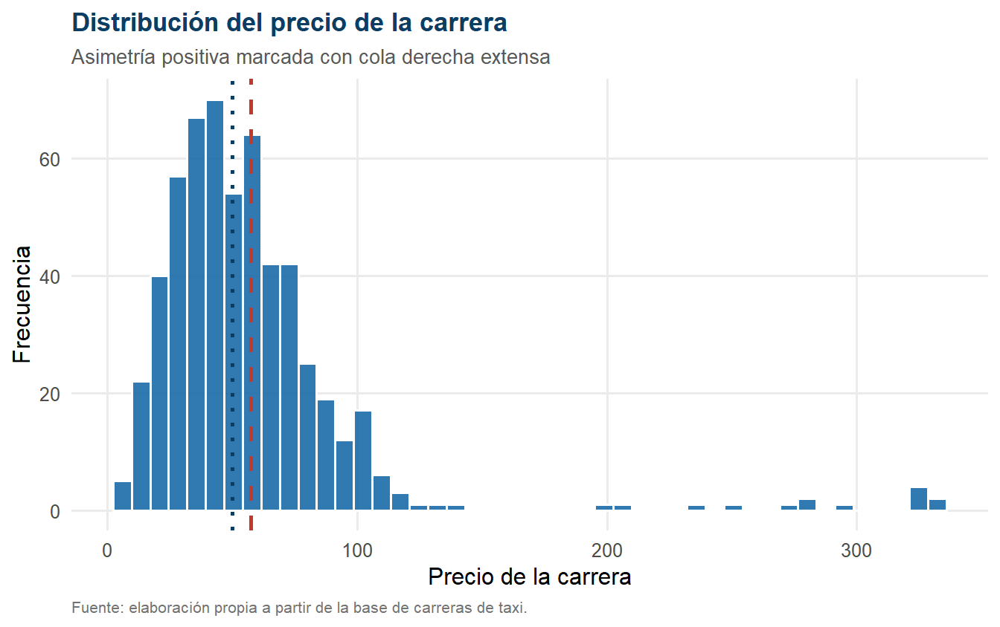
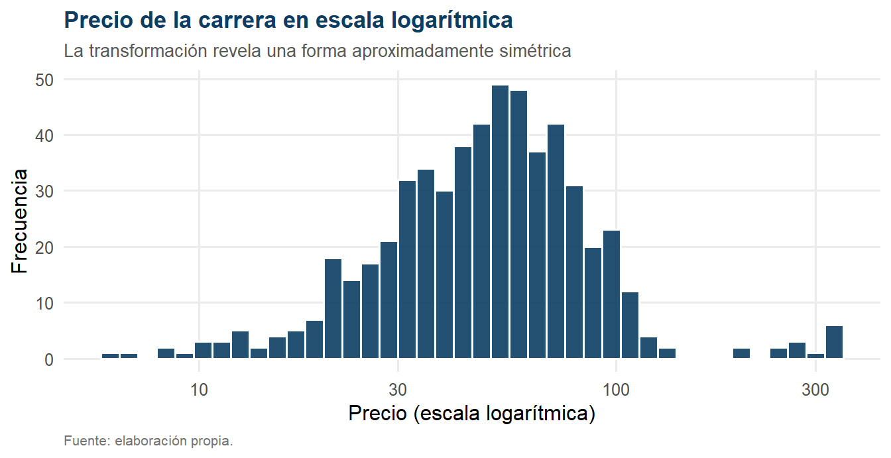
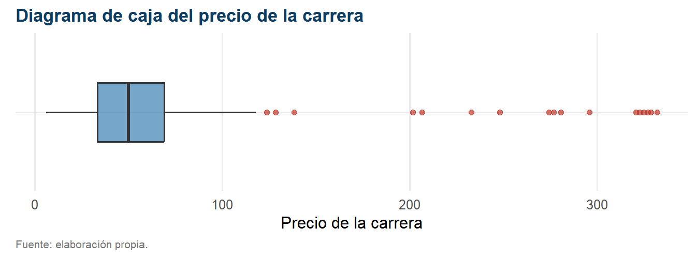
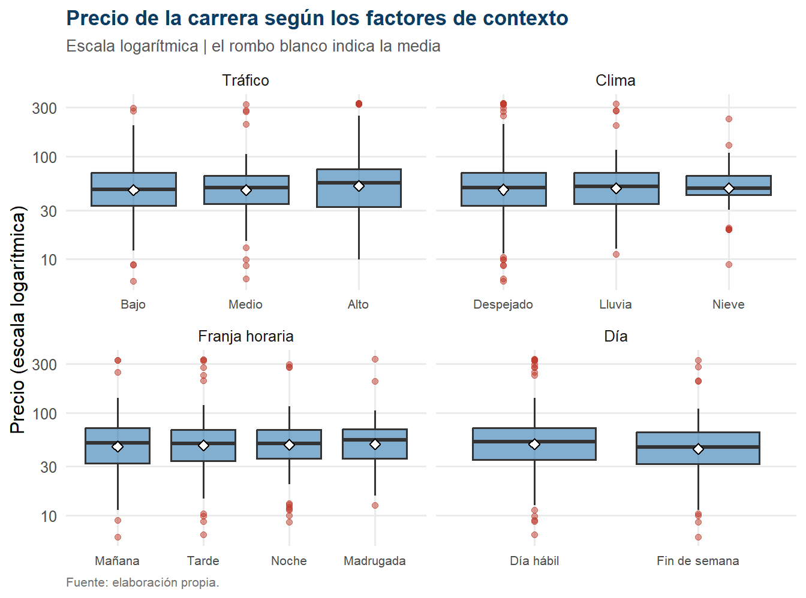
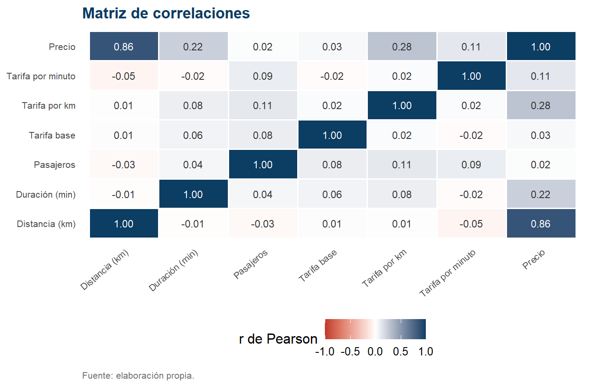
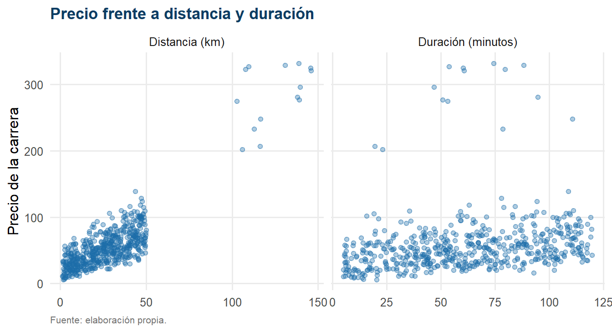
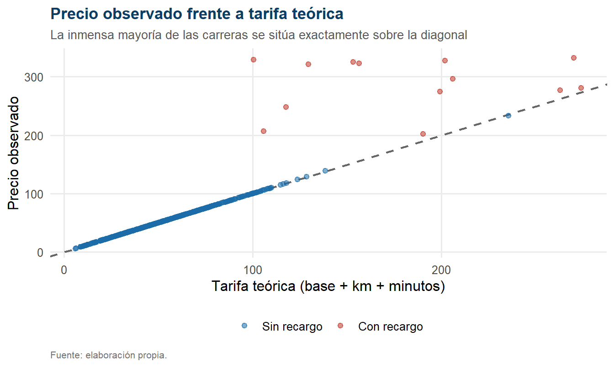

Capítulo 3 Análisis descriptivo
A partir de este capítulo se trabaja con la submuestra de 562 carreras completas justificada en el Capítulo 2.
3.1 Caracterización global del precio
| Estadístico | Valor |
|---|---|
| n | 562 |
| Media | 57.66 |
| Error estándar | 1.854 |
| IC 95% de la media | [54.02 ; 61.31] |
| Mediana | 50.16 |
| Desviación estándar | 43.96 |
| Coeficiente de variación | 76.2 % |
| Mínimo | 6.13 |
| Máximo | 332.04 |
| Q1 | 33.58 |
| Q3 | 69.15 |
| Rango intercuartílico | 35.56 |
| Asimetría | 3.761 |
| Curtosis (exceso) | 18.599 |
Interpretación. El precio medio de una carrera es de 57.66 unidades monetarias, pero ese valor describe mal a la carrera típica. La mediana, 50.16, es sensiblemente inferior, y la distancia entre ambas medidas es el primer indicio de una asimetría positiva pronunciada: la media está siendo arrastrada al alza por un grupo reducido de carreras muy caras.
Los coeficientes de forma confirman el diagnóstico de manera contundente. La asimetría alcanza 3.76 —frente al valor 0 de una distribución simétrica— y la curtosis en exceso llega a 18.6, muy por encima del 0 correspondiente a una normal. Se trata de una distribución fuertemente asimétrica a la derecha y leptocúrtica, con una cola derecha larga y pesada. El coeficiente de variación de 76.2 % ratifica una heterogeneidad muy elevada.
Este perfil no es una anomalía inesperada: es exactamente el que predice el marco teórico del Capítulo 1 para un mercado donde la mayoría de las carreras se liquida a tarifa ordinaria y una minoría incorpora recargos o corresponde a trayectos excepcionalmente largos.

Figure 3.1: Distribución del precio de la carrera. La línea discontinua marca la media y la punteada la mediana.

Figure 3.2: El mismo histograma en escala logarítmica, donde la forma se aproxima a la campana.
La comparación entre las Figuras 3.1 y 3.2 es metodológicamente relevante. En escala original la distribución es claramente asimétrica; en escala logarítmica recupera una forma acampanada y razonablemente simétrica. Esto indica que la asimetría es de naturaleza multiplicativa, característica de las variables de precio: los factores que encarecen una carrera actúan proporcionalmente y no por adición de una cantidad fija. Es la firma estadística de un mecanismo tarifario basado en tasas y multiplicadores.
3.2 Valores atípicos
| Elemento | Valor |
|---|---|
| Q1 | 33.58 |
| Q3 | 69.15 |
| Rango intercuartílico | 35.56 |
| Límite inferior de Tukey | -19.76 |
| Límite superior de Tukey | 122.49 |
| Atípicos por exceso | 17 |
| Atípicos por defecto | 0 |
| Porcentaje de atípicos | 3.0 % |
| Precio máximo observado | 332.04 |
| Distancia media de los atípicos | 111.07 |
| Distancia media del resto | 25.17 |

Figure 3.3: Diagrama de caja del precio. Los puntos situados a la derecha del bigote son los atípicos por exceso.
Interpretación. El criterio de Tukey identifica 17 carreras atípicas, todas ellas por exceso, que representan apenas el 3.0 % de la submuestra. Su característica más llamativa no es el precio sino la distancia: estas carreras recorren en promedio 111.07 kilómetros, frente a 25.17 kilómetros del resto.
La conclusión descriptiva es importante y condiciona todo el capítulo siguiente: los valores extremos no parecen errores de registro, sino trayectos de larga distancia que constituyen un régimen de operación distinto. Por tratarse de observaciones legítimas no se eliminan del análisis, pero su influencia potencial sobre las pruebas basadas en medias obliga a un análisis de sensibilidad específico, que se desarrolla en la Sección 4.5.
3.3 Las variables del trayecto
| Variable | n | Media | Desv. est. | CV (%) | Mediana | Mínimo | Máximo | Asimetría |
|---|---|---|---|---|---|---|---|---|
| Distancia (km) | 562 | 27.77 | 21.15 | 76.16 | 26.42 | 1.27 | 146.07 | 2.46 |
| Duración (min) | 562 | 61.83 | 32.13 | 51.97 | 61.21 | 5.01 | 119.84 | 0.01 |
| Pasajeros | 562 | 2.53 | 1.11 | 43.76 | 3.00 | 1.00 | 4.00 | -0.02 |
| Tarifa base | 562 | 3.51 | 0.87 | 24.82 | 3.54 | 2.01 | 5.00 | -0.01 |
| Tarifa por km | 562 | 1.22 | 0.43 | 35.28 | 1.20 | 0.50 | 2.00 | 0.14 |
| Tarifa por minuto | 562 | 0.29 | 0.11 | 39.84 | 0.28 | 0.10 | 0.50 | 0.12 |
| Precio | 562 | 57.66 | 43.96 | 76.23 | 50.16 | 6.13 | 332.04 | 3.76 |
Interpretación. La lectura conjunta de la Tabla 3.3 revela una asimetría muy desigual entre variables. Los componentes tarifarios —tarifa base, tarifa por kilómetro y tarifa por minuto— presentan coeficientes de asimetría próximos a cero y recorridos acotados, lo que sugiere que fueron asignados de manera aproximadamente uniforme dentro de rangos administrativos predefinidos. La duración y el número de pasajeros muestran igualmente perfiles simétricos.
En contraste, la distancia y el precio son las dos únicas variables con asimetría positiva apreciable, y lo son en grados similares. Esta coincidencia es la primera señal, aún descriptiva, de que ambas variables comparten un mismo mecanismo generador: el precio hereda la forma de la distribución de la distancia. El Capítulo 4 contrasta formalmente esta relación.
3.4 El precio según los factores de contexto
| Factor | Nivel | n | Media | Desv. est. | Mediana | CV (%) |
|---|---|---|---|---|---|---|
| Tráfico | Bajo | 218 | 55.54 | 36.06 | 47.83 | 64.92 |
| Tráfico | Medio | 236 | 54.36 | 35.82 | 49.72 | 65.90 |
| Tráfico | Alto | 108 | 69.17 | 67.15 | 55.14 | 97.08 |
| Clima | Despejado | 386 | 57.34 | 44.55 | 49.82 | 77.69 |
| Clima | Lluvia | 134 | 58.84 | 44.72 | 50.86 | 76.00 |
| Clima | Nieve | 42 | 56.85 | 36.17 | 49.33 | 63.62 |
| Franja horaria | Mañana | 157 | 56.67 | 42.97 | 50.50 | 75.82 |
| Franja horaria | Tarde | 220 | 57.83 | 45.15 | 49.85 | 78.07 |
| Franja horaria | Noche | 124 | 58.13 | 42.69 | 49.82 | 73.44 |
| Franja horaria | Madrugada | 61 | 58.66 | 45.67 | 54.37 | 77.86 |
| Día | Día hábil | 381 | 59.69 | 46.16 | 52.10 | 77.33 |
| Día | Fin de semana | 181 | 53.41 | 38.70 | 46.18 | 72.47 |
Interpretación. La Tabla 3.4 ofrece un resultado que contradice la expectativa teórica. Las medias de precio son notablemente similares entre los niveles de casi todos los factores: las cuatro franjas horarias difieren entre sí en menos de dos unidades monetarias, y lo mismo ocurre entre condiciones climáticas. Si la congestión y el clima encarecieran las carreras según predice la literatura, las diferencias deberían ser visibles ya en esta tabla.
La única excepción aparente es el tráfico alto, cuya media supera a la de los otros dos niveles. Sin embargo, la propia tabla contiene el elemento que obliga a la cautela: la desviación estándar del grupo de tráfico alto casi duplica a la de los demás, y su mediana no se aparta de la de los otros niveles del mismo modo que su media. Cuando la media se desplaza pero la mediana no lo hace, la explicación habitual es la presencia de unas pocas observaciones extremas dentro de ese grupo. Retengamos esta observación: reaparecerá como el hallazgo central del análisis inferencial.

Figure 3.4: Distribución del precio según cada factor de contexto (escala logarítmica para facilitar la comparación).
La Figura 3.4 confirma visualmente la impresión anterior: las cajas están prácticamente alineadas dentro de cada panel. No se aprecia el desplazamiento sistemático que evidenciaría un efecto de contexto sobre el precio. Los puntos rojos —los atípicos— aparecen distribuidos entre todos los niveles.
3.5 Relación entre el precio y las variables del trayecto

Figure 3.5: Matriz de correlaciones de Pearson entre las variables cuantitativas.
Interpretación. La matriz de la Figura 3.5 concentra el hallazgo descriptivo más importante del capítulo. La fila del precio muestra una correlación muy elevada con la distancia y correlaciones sustancialmente menores con todas las demás variables. Igualmente revelador es lo que ocurre fuera de esa fila: las variables explicativas entre sí presentan correlaciones próximas a cero. Distancia y duración, en particular, son prácticamente ortogonales, lo cual es llamativo desde el punto de vista sustantivo —cabría esperar que los trayectos más largos duraran más— y constituye una característica de la base que se discutirá en el Capítulo 5.

Figure 3.6: Relación del precio con la distancia y con la duración del trayecto.
El contraste entre los dos paneles de la Figura 3.6 es nítido. Frente a la distancia los puntos se ordenan siguiendo una pauta ascendente clara, con una dispersión que se abre a medida que crece la distancia. Frente a la duración, en cambio, la nube es esencialmente amorfa: no se distingue tendencia alguna. El precio aumenta con los kilómetros recorridos, no con los minutos transcurridos.
3.6 Consistencia con la estructura tarifaria
| Elemento | Valor |
|---|---|
| Carreras analizadas | 562 |
| Carreras cuyo precio coincide con la tarifa teórica | 548 |
| Porcentaje de coincidencia exacta | 97.5 % |
| Carreras con recargo (razón > 1,01) | 13 |
| Razón mediana | 1.000 |
| Razón máxima | 3.273 |
| Precio medio de las carreras con recargo | 287.86 |
| Precio medio de las carreras sin recargo | 52.21 |
| Distancia media de las carreras con recargo | 125.92 |
| Distancia media de las carreras sin recargo | 25.45 |

Figure 3.7: Precio observado frente a tarifa teórica. La línea discontinua es la diagonal de coincidencia perfecta.
Interpretación: el mecanismo de formación del precio. La Tabla 3.5 y la Figura 3.7 resuelven la cuarta pregunta de investigación de manera casi definitiva. En 97.5 % de las carreras el precio observado coincide exactamente con la tarifa teórica calculada a partir de la estructura bipartita declarada. La razón mediana entre precio observado y tarifa teórica es 1.000.
El precio no es, por tanto, una variable con componente aleatorio apreciable: es una función determinista de la tarifa base, la distancia y la duración. Esto explica de manera inmediata por qué los factores de contexto no aparecían asociados al precio en la Tabla 3.4: no pueden estarlo, salvo que modifiquen alguno de los componentes de esa fórmula.
Existe, sin embargo, una excepción cuantitativamente pequeña pero conceptualmente decisiva: 13 carreras se apartan de la diagonal, con razones que llegan hasta 3.27. Son precisamente las carreras que aparecen en rojo en la parte superior de la Figura 3.7 y coinciden en buena medida con los valores atípicos detectados antes: trayectos muy largos cuyo precio excede a la tarifa teórica. La quinta pregunta de investigación —si estos recargos se asocian a alguna condición de operación— se responde mediante la prueba de asociación del Capítulo 4.
3.7 Síntesis descriptiva
- El precio presenta una distribución fuertemente asimétrica a la derecha, con 17 valores atípicos correspondientes a trayectos de larga distancia.
- La asimetría es de naturaleza multiplicativa: la transformación logarítmica restituye la simetría.
- La distancia es la única variable del trayecto fuertemente asociada al precio; la duración apenas lo está.
- Los factores de contexto no muestran diferencias descriptivas apreciables en el precio.
- El precio se reproduce exactamente a partir de la estructura tarifaria declarada en 97.5 % de los casos.